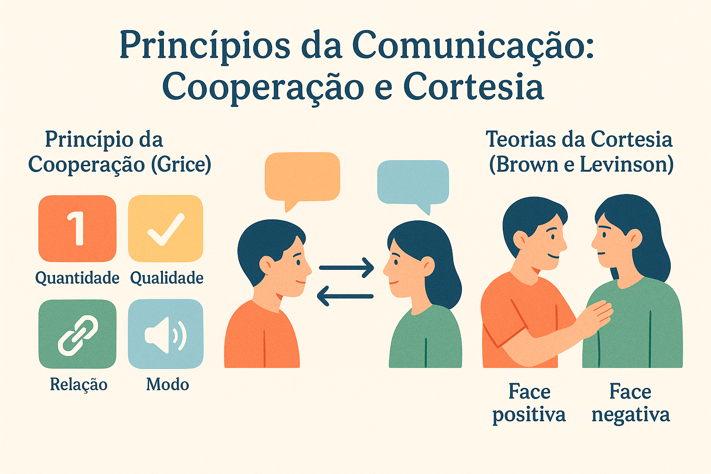

Princípios da Comunicação: Cooperação, Máximas de Grice e Cortesia
A conversação humana é um dos feitos mais refinados da inteligência e da vida social: em frações de segundo, falantes e ouvintes ajustam turnos de fala, codificam mensagens implícitas, preservam reputações mútuas e negociam acordos complexos sem recorrer a manuais explícitos. Se a comunicação se limitasse à troca telegráfica e literal de informações lógicas, nossa convivência cotidiana se assemelharia ao processamento frio de dados computacionais ou descambaria para o conflito agressivo ininterrupto. O equilíbrio da vida social reside na interação harmoniosa entre dois grandes motores pragmáticos: a cooperação informacional e a diplomacia da cortesia.
Em 1975, o filósofo britânico Herbert Paul Grice revolucionou a Linguística ao demonstrar que todo intercâmbio verbal bem-sucedido repousa sobre uma premissa tácita de colaboração mútua: o Princípio de Cooperação. Por meio de quatro máximas cardeais (quantidade, qualidade, relação e modo), Grice explicou como somos capazes de transmitir e compreender muito mais do que aquilo que é estritamente pronunciado, fundamentando a teoria das implicaturas conversacionais.
Por outro lado, como comprovaram os linguistas Penelope Brown e Stephen C. Levinson (1987) e Geoffrey Leech (1983), a racionalidade informativa precisa coexistir com a sensibilidade sociopolítica. Os sujeitos não são apenas calculadores lógicos; são seres vulneráveis que possuem imagem pública e anseiam por aceitação. A Teoria da Polidez demonstra como a linguagem estrutura rituais cotidianos para proteger o que Erving Goffman chamou de "face", equilibrando a necessidade de ser acolhido com a urgência de manter a própria liberdade e autonomia.
Neste artigo acadêmico completo, você explorará a lógica conversacional de Grice, a anatomia das quatro máximas, a dedução e as propriedades das implicaturas, a matriz de preservação das faces positiva e negativa de Brown e Levinson, o cotejo comparativo entre eficiência e diplomacia, roteiro metodológico de análise, exemplos aplicados passo a passo, questões oficiais resolvidas e sínteses teóricas.

A racionalidade conversacional e o Princípio de Cooperação de Paul Grice
Em seu célebre ensaio Logic and Conversation (1975), Paul Grice sustentou a tese de que a conversa humana não é uma sucessão anárquica de observações desconexas. Ao engajarem-se em um diálogo, os participantes reconhecem, em certa medida, um propósito comum ou um conjunto de objetivos mutuamente aceitos. Essa orientação compartilhada é formalizada no Princípio de Cooperação:
O Princípio de Cooperação segundo H. P. Grice
“Faça sua contribuição conversacional tal como é requerida, no momento em que ocorre, pelo objetivo ou direção aceita da troca verbal na qual você está engajado” (GRICE, 1975, p. 45; LEVINSON, 2007, p. 124).
Inspirando-se nas categorias epistemológicas de Immanuel Kant, Grice desdobrou esse princípio geral em quatro máximas conversacionais fundamentais:
As Quatro Máximas Conversacionais de Grice
- Máxima de Quantidade (Informatividade):
• Faça com que sua contribuição seja tão informativa quanto o necessário para os objetivos correntes do diálogo;
• Não torne sua contribuição mais informativa do que o exigido. - Máxima de Qualidade (Veracidade):
• Tente fazer com que sua contribuição seja verdadeira;
• Não afirme aquilo que você acredita ser falso;
• Não sustente nada sobre o que não possua evidências ou provas adequadas. - Máxima de Relação / Relevância (Pertinência):
• Seja relevante (diga coisas que tenham conexão temática direta com o foco da interação). - Máxima de Modo (Clareza):
• Seja claro e compreensível;
• Evite obscuridades e jargões herméticos desnecessários;
• Evite ambiguidades e duplos sentidos involuntários;
• Seja breve (evite prolixidade inútil);
• Seja ordenado na exposição das ideias.
As quatro posturas do falante perante as máximas
Ao participar de uma interação, um falante pode relacionar-se com as máximas de quatro maneiras distintas:
- Cumprimento estrito: o falante adere transparente e literalmente ao que as máximas prescrevem (comunicação direta e informativa);
- Violação silenciosa e dissimulada: o falante transgride uma máxima com a intenção deliberada de enganar o ouvinte (a mentira, que quebra a Qualidade sem deixar pistas);
- Renúncia expressa (Opting out): o locutor declara abertamente sua indisposição de colaborar (ex.: “Sem comentários” ou “Minha ética profissional impede-me de responder a isso”);
- Transgressão deliberada e explícita (Flouting): o falante quebra ostensivamente uma máxima diante de todos, mas sem intenção de mentir ou abandonar a conversa. É dessa atitude que emergem as implicaturas conversacionais.
Implicaturas Conversacionais: a arte do sentido inferencial
A grande inovação de Grice reside na descoberta de que a quebra voluntária de uma máxima não arruína a comunicação: pelo contrário, ela força o ouvinte a buscar uma interpretação implícita de nível superior para preservar a crença de que o falante continua cooperando.
Implicaturas Convencionais
Decorrem do próprio significado gramatical de certos termos e conectivos da língua, independentemente do contexto circunstancial. Não admitem cancelamento sem contradição lógica.
Exemplo: “Ele é pobre, mas honesto” (o conectivo adversativo mas aciona convencionalmente a implicatura de que a pobreza costuma estar associada à desonestidade).
Implicaturas Conversacionais
Nascem estritamente do cálculo inferencial do interlocutor ancorado na situação concreta de enunciação e na presunção de cooperação. São eminentemente dependentes do contexto e revogáveis.
Exemplo: “Você vai comer esse pedaço de bolo?” (em contexto específico, não é mera pergunta, mas o implícito de que o falante deseja o alimento).
As quatro propriedades essenciais das implicaturas conversacionais
Segundo a sistematização de Levinson (2007), uma implicatura conversacional autêntica distingue-se por quatro critérios epistemológicos:
- Cancelabilidade (ou Revogabilidade): o falante pode anular a implicatura explicitamente em um adendo posterior sem cometer contradição semântica (ex.: “Tenho prova cedo amanhã... mas decidi não estudar e vou à festa com você”);
- Não separabilidade: a inferência decorre do conteúdo proposicional e do contexto, não de uma palavra mágica isolada (ao substituir a sentença por sinônimos, a implicatura persiste);
- Calculabilidade: o ouvinte é capaz de reconstruir logicamente o encadeamento de passos cognitivos que levou o enunciador àquela ideia oculta;
- Indeterminação: a proposição implicada pode abrir margem para mais de uma leitura plausível, preservando a ambiguidade protetiva do falante.
A dimensão relacional: a Teoria da Polidez de Brown e Levinson
Se nos comunicássemos exclusivamente de acordo com as máximas de Grice, seríamos absolutamente diretos, telegráficos e assertivos. No entanto, o ser humano é regido por imperativos sociais de sobrevivência afetiva e reputacional. Desenvolvida em 1987 por Penelope Brown e Stephen Levinson com base nas noções de interação de Erving Goffman (1967), a Teoria da Polidez explica por que os sujeitos frequentemente sacrificam a brevidade de Grice para salvar as convenções sociais.
O conceito nuclear da teoria é a Face: a imagem pública de si que cada membro de uma sociedade reivindica para si durante as interações verbais. A face subdivide-se em dois anseios simultâneos:
A Dualidade da Face Social
- Face Positiva: o anseio universal de todo sujeito de ser valorizado, amado, admirado, compreendido e acolhido pelo grupo social. É o desejo de que suas opiniões e presenças sejam aprovadas e compartilhadas pelos pares;
- Face Negativa: a necessidade primordial de liberdade de ação, preservação de tempo e território pessoal. É o desejo de não sofrer coerções, ordens, invasões ou imposições autoritárias da vontade alheia.
Atos que Ameaçam a Face (FTA - Face Threatening Acts)
Certas ações comunicativas inevitáveis colocam em risco imediato a integridade da face dos participantes:
- Ameaças à Face Positiva do Ouvinte: críticas públicas, repreensões, discordâncias ásperas, desprezo, insultos;
- Ameaças à Face Negativa do Ouvinte: ordens imperativas, pedidos de favor extenuantes, cobranças, conselhos não solicitados, ameaças;
- Ameaças à Face do Próprio Falante: pedidos humilhantes de desculpas, confissão de erros graves, aceitação de ofertas constrangedoras.
As 5 superestratégias de preservação da face
Para navegar pelas interações mitigando o impacto danoso dos FTAs, Brown e Levinson catalogaram cinco estratégias de polidez, organizadas da menor para a maior taxa de delicadeza social:
| Superestratégia | Mecanismo Pragmático | Nível de Atenuação | Exemplo Típico |
|---|---|---|---|
| 1. Franca e Direta (Bald on-record) | Uso do modo imperativo sem qualquer atenuação de cortesia. Máxima eficiência griceana. | Nulo (alta imposição) | “Feche a janela agora.” |
| 2. Polidez Positiva | Busca criar proximidade, solidariedade e empatia, valorizando a face positiva do ouvinte. | Médio (aproximação) | “Amigo querido, quebra esse galho para nós e fecha a janela?” |
| 3. Polidez Negativa | Reconhece e respeita a autonomia do outro, utilizando atenuadores, escusas e pedidos indiretos. | Alto (respeito à liberdade) | “Desculpe incomodar, mas o senhor se importaria de encostar a janela?” |
| 4. Indireta / Fora de Registro (Off-record) | O ato é realizado mediante pistas sutis e implicaturas, permitindo ao falante negar a intenção. | Máximo (ambiguidade estratégica) | “Nossa, o vento que entra por ali está congelante...” |
| 5. Evitação do Ato | O falante avalia o risco social como excessivo e opta pelo silêncio, renunciando ao pedido. | Absoluto | (O sujeito passa frio calado para não incomodar o anfitrião). |
A tensão dialética: por que quebramos Grice para sermos educados?
A cooperação informacional de Grice prioriza a economia cognitiva e a clareza analítica; a polidez de Brown e Levinson prioriza a harmonia e a sobrevivência sociocomunicativa. É por essa exata razão que quebramos a Máxima de Modo (somos prolixos) e a Máxima de Quantidade (damos voltas e escusas) toda vez que precisamos fazer um pedido delicado a um superior hierárquico: o "desperdício de palavras" é o preço deliberado que pagamos para amortecer a ameaça à face do interlocutor.
Roteiro metodológico: como analisar cooperação e polidez em diálogos
Para estudantes de Letras, analistas do discurso e vestibulandos, a descrição dos princípios comunicativos em textos e conversações deve seguir uma ordem analítica precisa:
Passo a Passo da Análise de Cooperação e Cortesia
- Identificação das metas interacionais: verificar qual é o objetivo concreto da cena de fala (obter uma informação, cobrar uma tarefa, rejeitar um convite);
- Inspeção das máximas conversacionais de Grice: avaliar se as respostas são informativas (Quantidade), verídicas (Qualidade), pertinentes (Relação) e claras (Modo);
- Detecção de quebras voluntárias (Flouting): localizar se houve fuga do tema, prolixidade excessiva ou sarcasmo ostensivo;
- Cálculo da implicatura gerada: explicitar a mensagem implícita decodificada pelo ouvinte a partir do conhecimento de mundo mútuo;
- Mapeamento das ameaças à face (FTA): identificar quem corre risco de constrangimento público (face positiva) ou de coerção (face negativa);
- Classificação das estratégias de polidez: registrar se a abordagem foi direta (bald on-record), de aproximação (polidez positiva), atenuada (polidez negativa) ou por pistas (off-record).
Exemplos práticos de análise empírica aplicada
Caso 1: A carta de recomendação acadêmica minimalista
Contexto: Um renomado professor titular de Filosofia é convidado a escrever uma carta de recomendação para um ex-aluno que pleiteia uma disputada vaga docente em Epistemologia. A carta enviada à banca avaliadora diz estritamente o seguinte:
“Prezados colegas: atesto por meio desta que o senhor Fulano de Tal foi meu orientando, possui caligrafia impecável e nunca faltou às aulas pontualmente às terças-feiras. Atenciosamente, Professor Titular.”
Análise das Máximas de Grice: O professor quebra ostensivamente a Máxima de Quantidade (fornece pouquíssima informação sobre a competência teórica do aluno) e a Máxima de Relação (destacar "caligrafia" é irrelevante para a docência superior em Filosofia).
Cálculo da Implicatura: Como o professor não mentiu (preservou a Qualidade) e a banca sabe que ele é uma sumidade que conhece o candidato a fundo, os avaliadores calculam: “Se o professor nada disse sobre a inteligência, capacidade crítica ou produção teórica do aluno, é porque o candidato é medíocre nesses quesitos”.
Estratégia de Polidez: O docente optou por uma estratégia off-record (indireta). Ele evitou criticar frontalmente o aluno (o que seria uma agressão direta à face positiva do jovem), deixando que o silêncio proposital transmitisse a verdade à banca.
Caso 2: A recusa diplomática a um convite indesejado
Diálogo:
Colega de trabalho: “Vamos sair para jantar hoje à noite para comemorar o fim do mês?”
Você: “Nossa, adorei o convite e adoraria ir! Mas infelizmente minha mãe acabou de me ligar pedindo ajuda urgente com os exames médicos dela hoje.”
Análise de Polidez Concorrente:
1. Reparação da Face Positiva: “Adorei o convite e adoraria ir!” (valoriza o colega, sinalizando que a companhia dele é prazerosa e desejada);
2. Atenuação da Face Negativa: “Infelizmente minha mãe me pediu ajuda urgente...” (o falante transfere a responsabilidade da recusa para uma obrigação de força maior incontornável, provando que sua recusa não é motivada por desprezo ao colega).
Conclusão da análise empírica
A interação evidencia como a pragmática do dia a dia opera como uma engrenagem matemática e empática: sem as regras de Grice, perderíamos o rumo do sentido; sem as regras de Brown e Levinson, perderíamos a civilidade das relações humanas.
Questões para estudo e reflexão
Questão 1
(Concurso Público / Linguística Aplicada) Durante uma entrevista de emprego, o recrutador pergunta ao candidato: “Você tem experiência sólida com gestão de orçamentos internacionais?”. O candidato prontamente responde: “Eu leio revistas de economia todos os dias e tenho excelente relacionamento com o setor de contabilidade da minha antiga empresa.” De acordo com a teoria de Paul Grice, o candidato gerou uma implicatura a partir da:
- A) Violação silenciosa da máxima de qualidade por afirmar algo comprovadamente falso.
- B) Transgressão aberta (flouting) da máxima de relação (pertinência), permitindo inferir que ele não possui a experiência solicitada.
- C) Renúncia expressa ao princípio de cooperação por se recusar a responder.
- D) Aplicação de um ato de fala declarativo institucional.
Ver resposta comentada
Gabarito: B.
Resposta comentada: O candidato esquiva-se de responder com um simples "não". Ao discorrer sobre hábitos de leitura e simpatia com colegas de outro setor, ele quebra deliberadamente a Máxima de Relação (Relevância). O recrutador, acionando o Princípio de Cooperação, calcula a implicatura inescapável: o candidato não tem a vivência prática exigida para o cargo, mas tentou compensar a deficiência valorizando habilidades secundárias.
Questão 2
(PAES UEMA / Letras) Em uma tira humorística, o garçom traz a conta ao cliente e pergunta cordialmente: “O senhor apreciou o filé mignon ao molho madeira?”. O cliente responde apontando para o prato intocado: “Digamos que o dente de um tiranossauro rex teria dificuldades para mastigar este bife.” Analise como a ironia é construída nesse diálogo a partir das máximas de Grice.
Ver resposta comentada
Resposta comentada: A ironia é deflagrada pela quebra ostensiva da Máxima de Qualidade (hiperbólica) e da Máxima de Modo. Ao afirmar algo patentemente absurdo e falso no mundo empírico (a carne desafiar a arcada de um réptil jurássico extinto), o cliente não deseja que o garçom acredite literalmente na frase. Pelo contrário: a falsidade escandalosa da asserção compele o atendente a deduzir a implicatura irônica — o filé está excessivamente duro e mal preparado.
Questão 3
(ENEM / Interpretação Textual) Em debates parlamentares, deputados frequentemente iniciam suas intervenções de ataque aos projetos adversários dizendo: “Com o devido respeito que tenho pela inteligência do nobre colega, sua proposta é um desastre financeiro para a nação.” De acordo com a Teoria da Polidez de Brown e Levinson, a fórmula inicial configura-se como:
- A) Uma quebra irrecuperável do princípio de cooperação comunicativa.
- B) Uma estratégia de polidez mitigadora destinada a suavizar um Ato que Ameaça a Face (FTA) positiva do opositor.
- C) Um ato de fala diretivo direto no modo imperativo.
- D) Um ato performativo puramente constatativo sem força ilocucionária.
Ver resposta comentada
Gabarito: B.
Resposta comentada: Chamar a proposta de outro deputado de "desastre financeiro" é um ato gravíssimo de ameaça à face positiva do interlocutor (destrói sua imagem de competência pública). A expressão preambular “Com o devido respeito...” opera como um marcador metadiscursivo de polidez ritualística, cuja função pragmática é tentar blindar o locutor contra acusações de grosseria pessoal, atenuando simbolicamente a agressão iminente.
Questão 4
(Exame Acadêmico / Pós-Graduação) Qual é a diferença teórica essencial entre uma implicatura conversacional particularizada e uma implicatura conversacional generalizada na matriz de Paul Grice? Exemplifique.
Ver resposta comentada
Resposta comentada: A implicatura generalizada emerge quase automaticamente pelo emprego de certas palavras em virtude de convenções lexicais compartilhadas, independentemente de um contexto circunstancial raro (ex.: “Ana entrou em uma casa ontem” desencadeia a implicatura generalizada de que a residência não era a sua própria casa). Já a implicatura particularizada depende crucialmente das particularidades do contexto e da cena imediata de fala (ex.: a resposta “Está chovendo baldes lá fora” dita a quem perguntou “Vamos ao cinema?” só gera a implicatura de recusa porque o ouvinte sabe que ambos pretendiam ir a pé ou desfrutar de um passeio a céu aberto).
Questão 5
(Vestibular Tradicional / Teoria da Linguagem) O linguista Geoffrey Leech (1983) propôs o Princípio de Cortesia como uma correção e complemento indispensável ao Princípio de Cooperação de Grice. Qual é o argumento teórico central de Leech para sustentar essa necessidade?
Ver resposta comentada
Resposta comentada: Leech argumentou que o Princípio de Cooperação de Grice descreve um sujeito idealizado guiado unicamente pela lógica instrumental da eficiência da informação. Contudo, em situações sociais reais, se os falantes fossem sempre implacavelmente concisos, transparentes e literais, eles ofenderiam constantemente a sensibilidade de seus pares, destruindo a harmonia coletiva. O Princípio de Cortesia de Leech estabelece que os indivíduos violam conscientemente as máximas de Grice justamente para evitar atritos sociais e custos psicológicos ao interlocutor, comprovando que a diplomacia das relações humanas prevalece sobre a pura economia informacional.
Resumo dos Princípios da Comunicação
- A comunicação humana articula dois motores indissociáveis: a cooperação informacional (Grice) e a diplomacia social (Brown e Levinson);
- O Princípio de Cooperação orienta a troca verbal por quatro máximas: Quantidade (informatividade exata), Qualidade (veracidade), Relação (pertinência) e Modo (clareza);
- A transgressão deliberada e visível de uma máxima (flouting) gera implicaturas conversacionais deduzidas pelo interlocutor;
- As implicaturas conversacionais possuem quatro traços: são canceláveis, não separáveis, calculáveis e indeterminadas;
- A Teoria da Polidez estrutura-se em torno do conceito de Face (imagem social pública de si);
- A Face Positiva representa a necessidade de aceitação e aprovação; a Face Negativa representa a necessidade de liberdade de ação e autonomia;
- Os Atos que Ameaçam a Face (FTA) são atenuados por cinco superestratégias que vão do falar direto (bald on-record) à polidez negativa e pistas indiretas (off-record);
- O domínio desses princípios fundamenta a leitura crítica de propagandas, discursos políticos, negociações corporativas e a redação nota mil.
Perguntas frequentes sobre Cooperação e Cortesia
O que é o Princípio de Cooperação formulado por Paul Grice?
É a premissa pragmática segundo a qual os interlocutores em uma conversação orientam tacitamente suas falas por uma colaboração racional recíproca, fornecendo contribuições comunicativas adequadas ao propósito e ao momento do diálogo.
Quais são as quatro máximas conversacionais de Grice?
São: Quantidade (informe o necessário, nem mais nem menos), Qualidade (diga apenas o que acredita ser verdadeiro e fundado em evidências), Relação (seja relevante e pertinente ao assunto) e Modo (seja claro, breve, ordenado e evite ambiguidades).
Como se origina uma implicatura conversacional?
Ela surge quando um falante quebra ou transgride abertamente uma máxima conversacional sem abandonar o diálogo. Confiando que o falante continua cooperando em nível mais profundo, o ouvinte realiza um cálculo inferencial para descobrir a intenção comunicativa implícita.
Qual é a diferença entre face positiva e face negativa para Brown e Levinson?
A face positiva é o desejo que todo indivíduo possui de ser aprovado, admirado, compreendido e acolhido socialmente. A face negativa é a necessidade de preservar sua liberdade de ação, autonomia de tempo e espaço, sem sofrer ordens ou intromissões indevidas.
O que é um Ato que Ameaça a Face (FTA)?
É qualquer enunciado que contrarie as necessidades de face do ouvinte ou do falante. Ordens e pedidos ameaçam a face negativa do ouvinte (restringem sua liberdade), enquanto críticas e repreensões ameaçam sua face positiva (rebaixam sua imagem pública).
Por que violamos as máximas de Grice para demonstrar cortesia?
Porque a eficiência informacional pura de Grice (ser direto, conciso e franco) frequentemente soa agressiva ou impositiva. Assim, violamos máximas como a de Modo ou Quantidade recorrendo a indiretas, atenuadores e pedidos indiretos para proteger a face do outro.
As implicaturas conversacionais podem ser canceladas?
Sim. Uma das principais propriedades das implicaturas conversacionais é a cancelabilidade (ou revogabilidade). O enunciador pode acrescentar uma oração adicional que anula a inferência gerada sem cair em contradição lógica ou semântica.
Como esses conceitos são cobrados no ENEM e em vestibulares tradicionais?
As provas exigem reconhecer quebras de máximas em tirinhas cômicas, identificar a geração de humor e ironia por quebra de pertinência, e analisar estratégias de polidez e persuasão discursiva em crônicas, textos publicitários e debates políticos.
Considerações finais
A comunicação humana não se reduz à mera transmissão codificada de signos linguísticos: ela constitui um sofisticado balé relacional entre a busca da máxima eficácia informativa e a imperiosa necessidade de preservação da paz e da dignidade social. Ao desvendar as engrenagens ocultas do Princípio de Cooperação de Paul Grice e da Teoria da Polidez de Brown e Levinson, a Pragmática devolve ao estudo da linguagem sua dimensão mais humana, ética e fascinante.
Para estudantes de Letras, jornalistas, negociadores, profissionais da comunicação e cientistas da computação focados em Inteligência Artificial generativa, o domínio desses princípios oferece o mapa definitivo para transitar com elegância pelos meandros do discurso público, antecipar conflitos interpessoais e decifrar as verdadeiras intenções que pulsam sob o véu das palavras cotidianas.
Conteúdos relacionados
- Introdução à Pragmática: o Estudo do Uso da Linguagem em Contexto
- Deixis: a linguagem que aponta para o contexto
- Teoria dos Atos de Fala: Austin, Searle e a Ação pela Linguagem
- Inferência e Implicatura: o Sentido Além do Literal
- Pragmática e Ironia: O Sentido nas Entrelinhas
- Pragmática e Gêneros Textuais: a Linguagem em Ação
- Pragmática na Linguística: Contexto, Interação e Construção de Sentidos
- Pragmática | Linguagem, Contexto e Construção de Sentidos — Índice Geral
Referências
- BROWN, Penelope; LEVINSON, Stephen C. Politeness: Some Universals in Language Usage. Cambridge: Cambridge University Press, 1987.
- FIORIN, José Luiz. Introdução à Linguística: I. Objetos Teóricos. 6. ed. São Paulo: Contexto, 2013.
- GOFFMAN, Erving. Interaction Ritual: Essays on Face-to-Face Behavior. New York: Anchor Books, 1967.
- GRICE, Herbert Paul. Logic and Conversation. In: COLE, Peter; MORGAN, Jerry (ed.). Syntax and Semantics: Speech Acts. New York: Academic Press, 1975. v. 3, p. 41-58.
- KERBRAT-ORECCHIONI, Catherine. A enunciação: do sujeito ao discurso. Campinas: Pontes, 2006.
- LEECH, Geoffrey. Principles of Pragmatics. London: Longman, 1983.
- LEVINSON, Stephen C. Pragmática. Tradução de Alceu Dias Pinto e Aníbal Mari. São Paulo: Martins Fontes, 2007.
- MARCUSCHI, Luiz Antônio. Produção textual, análise de gêneros e compreensão. São Paulo: Parábola Editorial, 2008.
Explore Outros Conteúdos
Continue seus estudos acessando outras seções do site Mestre Kira: